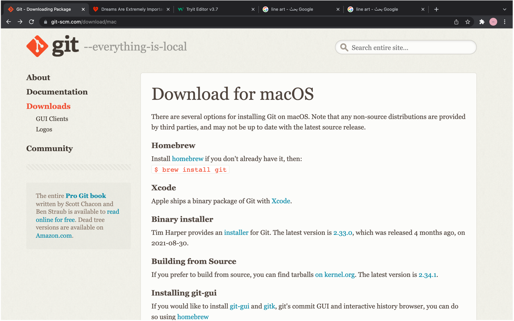
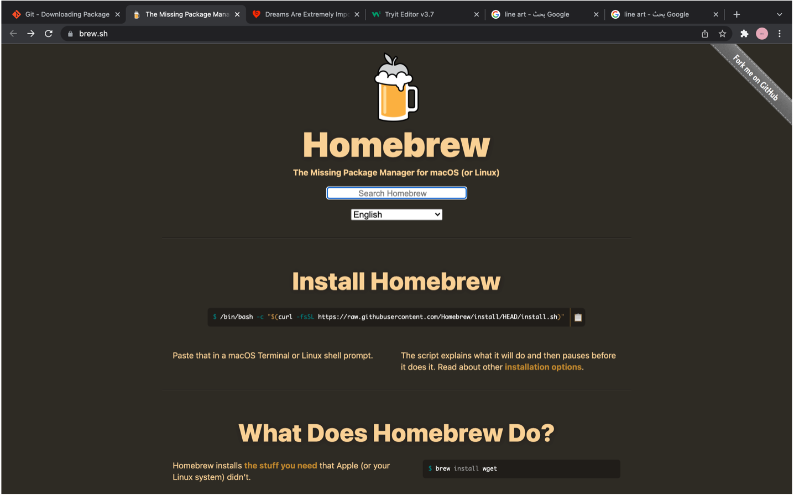
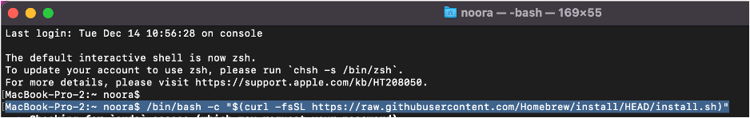
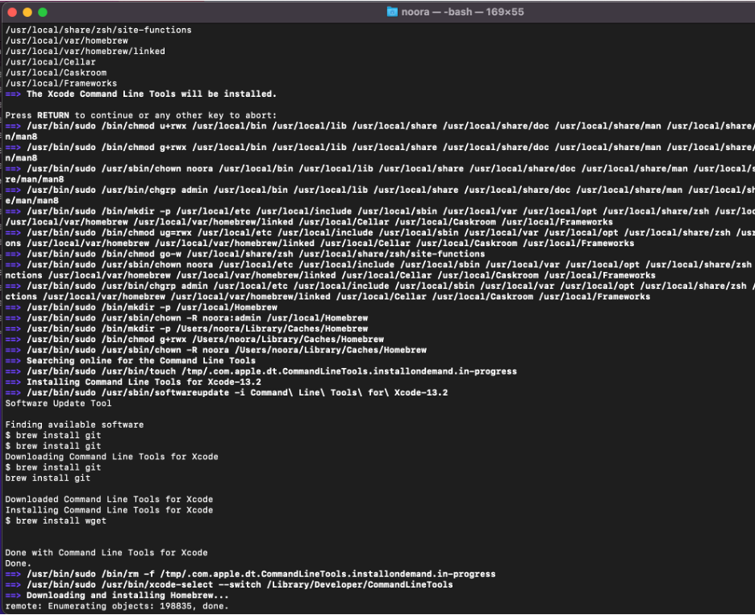
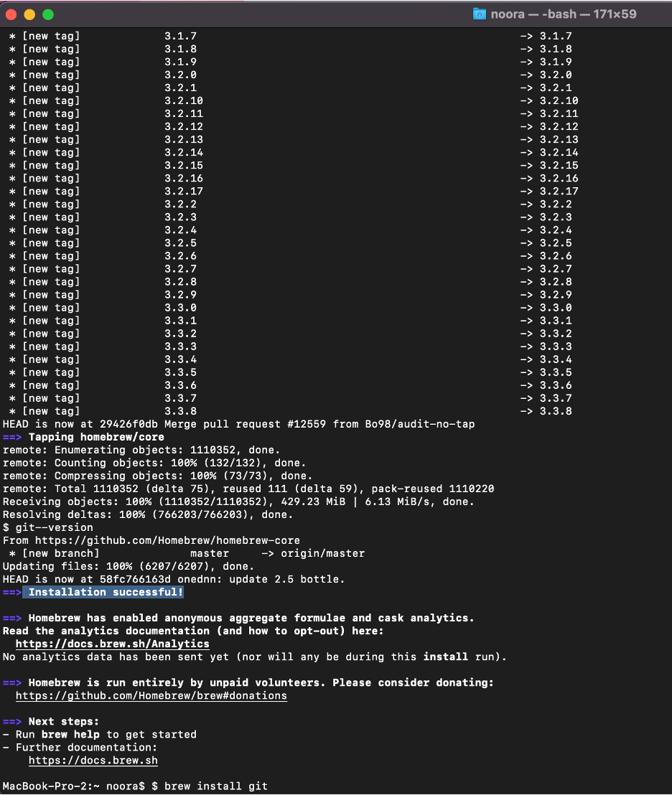
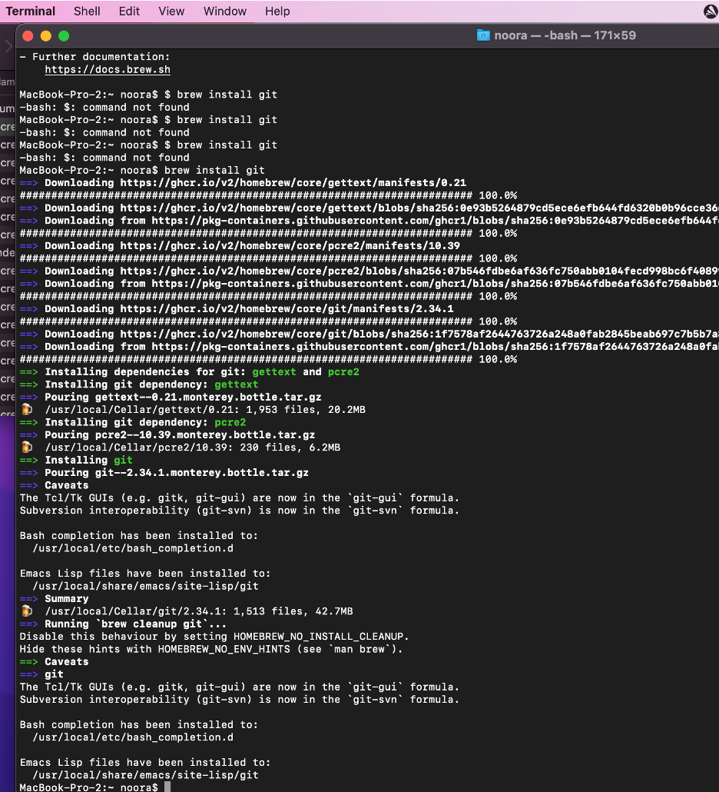
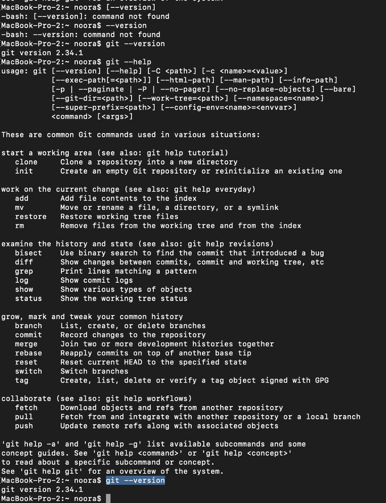
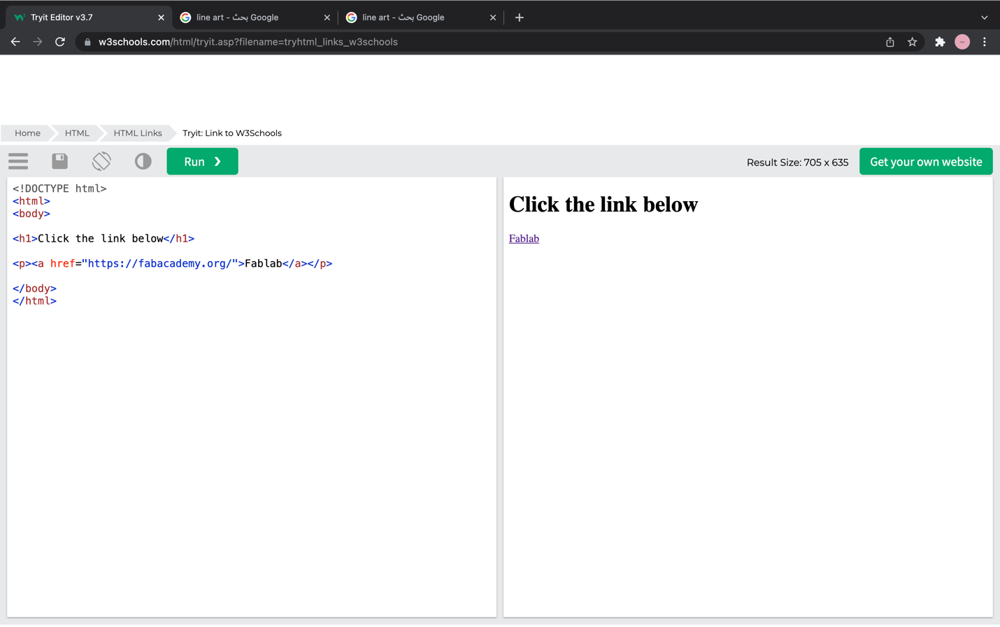
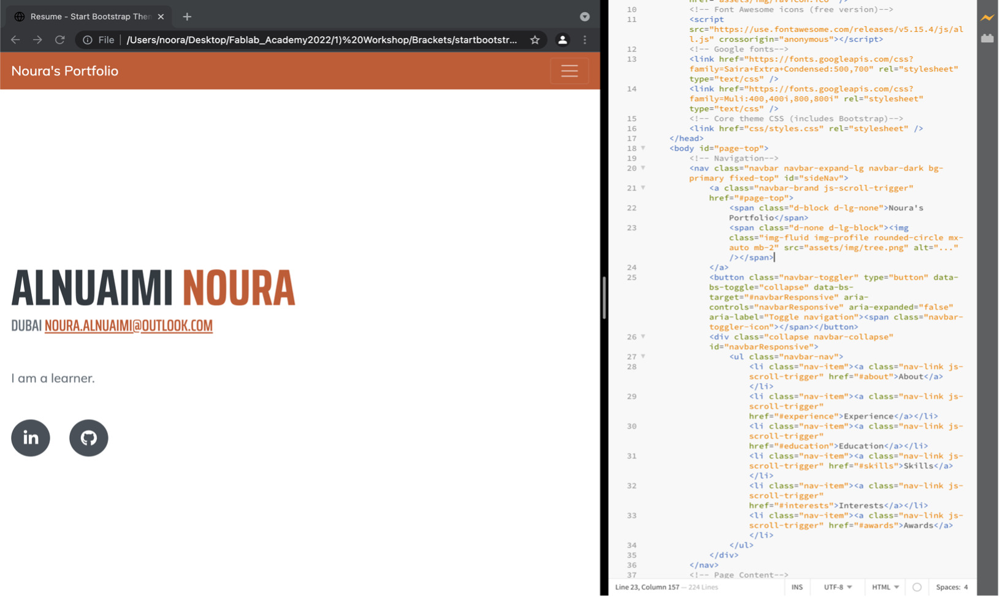
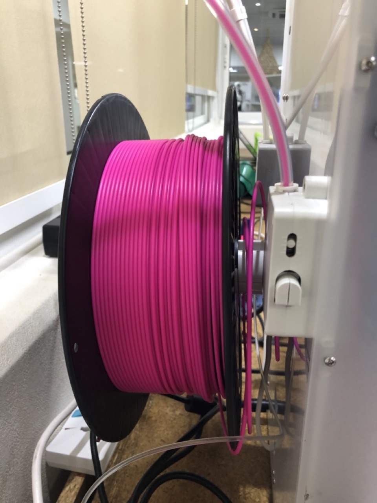

Git online workshop
This was the first thing learned from Fablab. The workshop was giving online using Microsoft teams by Eng. Hashem. The workshop was about how to start building my own website. At first, I get to know Git and I installed it on my Mac laptop, then Install Git on Mac Downloading HomeBrew to install Git on MacOS: This is the homebrew home page:
Using terminal; paste the code from the homebrew website: After the Xcode command done-->click enter to complete the installation process:
Installation successful:
Git installing:
Using terminal command after intalling Git to check version:
HTML tutorial:
Learned some HTML codes from w3school website. I used some of the codes to insert picture in the HTML template I used and to add another features and pages.Brackets:
Install brackets on Mac and use a free templet as a base to edit it on Brackets and build my own website. As shown in the picture below: I used a free templet to get familiar with brackets software and to deal with HTML code and to customize it. However, I didn’t like the templet I used so I’ve changed it later on. I used this templatehtml5 upto create my website.
Github hosting:
First I used my gmail email to create a github account. Hosting.........Finish the following tasks:
1- Creating a repo in your github
2- Linking your github repo with your PC
3- Knowing how to push changes from PC to github
4- Hosting a website in your github project folder and editing on it from your PC
Laser cutting workshop
Using the CorelDRAW software to create my design to be produce. I inspired my design from sheikh Zayed poem. This is the created initial design: Setup used before cutting the part; right click on picture and select detailed logo; then select image and delete the white background.Also, the last thing of the setup to check is color the outer lines in red which means to be cutted, and black color for engraving which will be for the image.
Setup used before cutting the part; right click on picture and select detailed logo; then select image and delete the white background.Also, the last thing of the setup to check is color the outer lines in red which means to be cutted, and black color for engraving which will be for the image.  I used a diffrenet image and then used the laser cutting machine to produce the part (using MDF wood sheet) auto setting in the software. The final cutted part is shown in this picture:
I used a diffrenet image and then used the laser cutting machine to produce the part (using MDF wood sheet) auto setting in the software. The final cutted part is shown in this picture: Finally, this is a video.
Finally, this is a video.
Group assignment:
Test the cutting settings (Power, Speed and Kerf) for one material (each student pick one material such as Acrylic, Wood, MDF cardboard and so on).3D printing workshop
Learned how to load the material filement into the printer. Also, I learned how to make the manual callibration for the built plate. Calibrating the built plate of the FDM utlimaker printer. Manually, by placing an A4 paper and use the bolts which underneath and holds the built plate to raise or lower the plate, to make sure it is 1mm gap between nozzle and build plate.Group assignment: test the design rules for your 3D printer
Testing the design rules on the Ultimaker printer. I choosed the surface finish model as a test which can be printed without using support material.
Finally, this is the surface finish model file stl. Here is a picture of the model while it's being printed: